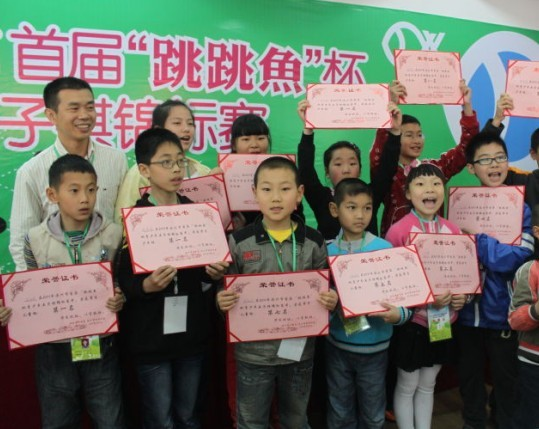

由“跳跳鱼”杯温州市首届青少年五子棋锦标赛有感
#1 由“跳跳鱼”杯温州市首届青少年五子棋锦标赛有感 作者：茗弈宽容 发表时间：2011-5-2 18:30:08
5.1期间，浙江温洲市的“跳跳鱼”杯温州市首届青少年五子棋锦标赛拉开帷幕。参加比赛的人数在70人左右，选手多数为温州当地青少年，场面颇为壮观。2号早上结束，总共七轮。
祝贺我的2个学生谢雨晨和陈嘉伟分别以7轮全胜的成绩获得儿童组和少年组冠军！在高兴学生能有幸获得这样的好成绩的同时，更多的是想到我们各地应该积极学习和借鉴浙江，江苏，上海等地的发展经验（特别是针对少儿），让五子棋在全国全面发展普及开来。前几日也正好看到江苏南通的一个比赛，还有一个“第二届全国智力运动会，文体明星五子棋对抗赛”的活动，另外刚刚闭幕的全国五子棋团体锦标赛的成功，参赛人数创历届之最，不禁感慨，中国五子棋在大家齐心努力下，正迈出坚实而有力的步伐，走向一个崭新而又美丽的春天！
［ 安娜制作所 于 2011-5-3 8:05:54 时奖励此帖[金币加 100 威望加1］
［此帖子已被 茗弈小刀 在 2011-5-3 18:04:56 编辑过］
［ 消逝的雨 于 2011-5-5 18:48:47 时花20金币送鲜花一朵］
［ 消逝的雨 于 2011-5-5 18:48:54 时花20金币送鲜花一朵］
［ 消逝的雨 于 2011-5-5 18:49:01 时花20金币送鲜花一朵］
#2 Re:由“跳跳鱼”杯温州市首届青少年五子棋锦标赛有感 作者：茗弈小七 发表时间：2011-5-2 19:00:58
谢雨晨和陈嘉伟我也祝贺！！！！掌声！！！#3 Re:由“跳跳鱼”杯温州市首届青少年五子棋锦标赛有感 作者：黄药师 发表时间：2011-5-2 19:47:52
谢雨晨到了少年组了吗？#4 Re:由“跳跳鱼”杯温州市首届青少年五子棋锦标赛有感 作者：weigui 发表时间：2011-5-3 6:48:08
本次比赛只限制温州户口的选手参加比赛，浙江其他地区的选手没有参与比赛。按情理来说，他们获得第一是自然现象，毕竟温州的五子棋运动才起步，在参与比赛的80人中，大概有20人是对比赛规则有学习的，即使是有学习的，也才到了解禁手为止。
但从一种侧面，也可以看出只要运作得当，五子棋的发展还是需要靠青少年的参与，没有后续的基础，发展就是空谈。
［ 黄药师 于 2011-5-3 9:21:30 时花20金币送鲜花一朵］
#5 Re:由“跳跳鱼”杯温州市首届青少年五子棋锦标赛有感 作者：茗弈宽容 发表时间：2011-5-3 9:17:18
温州市首届“跳跳鱼”杯青少年五子棋锦标赛昨日在我市少年宫落幕。经过两天的比赛，陈嘉炜等人分获首届青少年五子棋锦标赛四个组别的冠军。 共有80余名选手参加了本届比赛。这些选手之前的较量相当激烈，一些组别的冠军悬念直到最后一刻才宣告揭晓。在本届锦标赛的最后一场比赛中，一位选手最终不敌对手，与冠军擦肩而过后，当场扑到场边亲友团的怀里，哭了起来；而另一些亚军则保持了良好的心态，“只输了1盘，有点可惜，下次再努力吧。”十七中的初一女学生吴怡然回顾她在女子少年组中的比赛过程，略带遗憾地说。 比赛由温州市围棋协会和温州市少年宫主办，意大利跳跳鱼鞋服国际集团有限公司协办。意大利“跳跳鱼”鞋服国际集团目前以花样休闲鞋和男装为主打，日前，“跳跳鱼”还与意大利CREAZIONI MZDA设计公司签订合作协议，成立浙江跳跳鱼儿童用品股份有限公司，携手进军儿童用品市场。 [冠军语录] 陈嘉炜：很高兴认识了新朋友 “这是我新认识的朋友，以及他们的QQ号码。”男子少年组冠军陈嘉炜说。在这个12岁男孩的参赛证背后，写着两个名字和QQ号码。在这个小男生看来，拿到冠军固然可喜，通过下棋认识棋友，也是一件很值得高兴的事情。 陈嘉炜在本次比赛中的发挥相当出色，在第6轮就基本锁定了冠军。一旁的妈妈介绍说，孩子很喜欢五子棋，参加学习班下棋时，从来不用担心他偷懒。在五子棋等棋类项目的开发下，他的抽象思维能力相当不错。根据老师的评价，陈嘉炜的脑子“绝对好使”。 “我挺喜欢五子棋和中国象棋的，不过我觉得五子棋是我棋类里下得最好的项目。”陈嘉炜表达了他对五子棋发自内心的喜爱。 谢雨晨：……奖金拿来干嘛呢…… “……奖金要拿来干嘛……”对于这个问题，谢雨晨犹豫了很久，仿佛是碰上了一道很难化解的棋局。这个男子儿童组的冠军在纠结了很久后，才说：“我想用来买吃的。” 有些腼腆的谢雨晨在规划布局上的水平，绝对要比面对陌生叔叔的提问优秀。在这届比赛中，他取得了7场胜利，以全胜的战绩顺利夺冠。他和陈嘉炜两人是学棋的好朋友，两人除了在温州参加比赛外，还一起前往宁波参加过比赛，并取得了不俗的成绩。 “孩子喜欢下棋就让他下，我们尊重他的选择。”谢雨晨的父母也为孩子的成绩感到由衷的自豪。不过对于奖金的处置，妈妈有点不同的意见：“我本想让他用奖金买张学习桌的。”
以上是都市报对他们的采访报道
#6 Re:由“跳跳鱼”杯温州市首届青少年五子棋锦标赛有感 作者：与郎共五 发表时间：2011-5-3 9:41:04
星星之火可以燎原。#7 Re:Re:由“跳跳鱼”杯温州市首届青少年五子棋锦标赛有感 作者：茗弈宽容 发表时间：2011-5-5 15:18:38


#8 Re:由“跳跳鱼”杯温州市首届青少年五子棋锦标赛有感 作者：茗弈小刀 发表时间：2011-5-5 15:31:44
#9 Re:由“跳跳鱼”杯温州市首届青少年五子棋锦标赛有感 作者：茗弈宽容 发表时间：2011-5-5 15:34:44
其实谢雨晨能拿冠军，母亲的功劳是最大的，我见证了一个母亲如何在孩子身上付出的心血。其次才是孩子自己的努力，希望大为早点明白~乖乖。［此帖子已被 茗弈宽容 在 2011-5-5 15:39:25 编辑过］